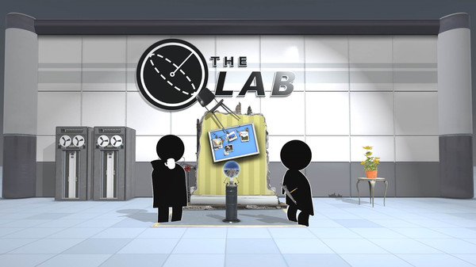

[sam@arch:~]$ echo "$(cat reviews/GAME_NAME_HERE.txt)"
_____ _ _ _ _____ _ __ _______
|_ _| |_ ___ | | __ _| |__ / / __| |_ ___ __ _ _ _\ \ / / _ \ \
| | | ' \/ -_) | |__/ _` | '_ \ | |\__ \ _/ -_) _` | ' \ V /| /| |
|_| |_||_\___| |____\__,_|_.__/ | ||___/\__\___\__,_|_|_|_\_/ |_|_\| |
\_\ /_/

Overall Rating:
6 out of 10 stars
I'm still very new to Virtual Reality, as I picked up my Oculus Quest 2 about a week ago, at its launch. But the lab is a free set of VR minigames made by valve set in the universes of Dota and Portal. You can do a bow and arrow minigame and catapult Apeture Science cores at crates in an Angry Birds esque style. For a beginner, this is perfect. None of the minigames are anywhere close to motion sickness inducing - they all mainly involve you standing still and using your arms to complete tasks. The teleport controls are also very comfortable, there's no smooth turning or movement for more advanced players. Your only movement controls are snap turning and teleportation. At the grand price of zero dollars and zero cents this comes as a pretty good deal for what it is. If you're having friends over this is also great for an overall introduction to virtual reality due to how accessable it is. The minigames are also relatively short (none lasting anywhere over ten minutes), so it's easy to pass around from person to person. Would I recommend The Lab? Well of course, it's free. Although I did face the issue of crashing on a couple of minigames, especially Robot Repair. I can't let that tarnish the experience as a whole though, as that could just be an issue with my Quest 2. I think overall it's good fun, especially for something that's free.